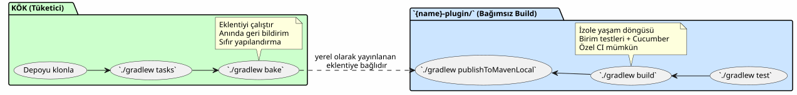
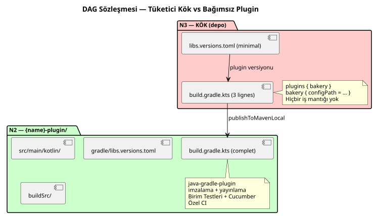

Bağımsız Eklenti + Tüketici Kökü » Mimarisi: Gradle Build'larım Neden Çiftleniyor
Yayınlandı: 14 May 2026
- Sorun: Bana Zaman Kaybettiren Üç Mimari
- Çözüm: İki Bağımsız Build, Bir Tüketici Kökü
- Bu Mimari Beni Neden Etkiledi
- {name}-plugin/` Alt Klasörünün Anatomisi
- Yapılmaması Gerekenler
- Karşılaştırma: Dogfooding Karşısında Üç Mimari
- DAG Sözleşmesi: Bir Racin Build’i Asla Bir Alt Klasörden Çalıştırılmaz
- Sonuç: Zaman Kazandıran Görünür Çoğaltma
- Referanslar
Bir Gradle eklenti deposunu klonluyorsunuz. Bir terminal açıyorsunuz. Ne yazarsınız? sonra?./gradlew tasks, elbette. Ama hangi klasörde? Kök dizinde mi? Alt modülde mi? Derleme işleminin nasıl yapılacağını öğrenmek için önce bir README okumak gerekir mi? Eğer şüpheye düşerseniz, sadece bir saniye, projenin mimarisi bozulmuş.
İşte bu sorunu bir kez ve tamamen nasıl çözdüğüm — ve neden bu pattern bugün tüm Gradle eklentilerimin imzasıdır`foundry/public/`Lütfen çevrilecek metni sağlayın.
Sorun: Bana Zaman Kaybettiren Üç Mimari
Güncel desene ulaşmadan önce, üç yaklaşım arasında denemeler yaptım bir Gradle eklentisini düzenlemek için klasik yöntemler. Her birinin kabul edilemez bir kusuru vardı.
Seçenek 1: İzole Eklenti (dogfooding yok)
Proje yalnızca eklentiyi içeriyor. Tüketim örneği yok. Yok yürüttüğü proje. Test etmek için harici bir proje oluşturulmalı, o eklentiyi şuradan referansla`mavenLocal`veya bir composite build, ve sadece çalışıp çalışmadığını kontrol etmek.
$ git clone mon-plugin
$ cd mon-plugin
$ ./gradlew build # le plugin compile
$ # ... et maintenant ? comment je l'essaie ?|
Tüketim örneği olmayan bir Gradle eklentisi, şunlar olmadan bir kütüphanedir: entegrasyon testleri. Son değişikliğin … yapıp yapmadığını asla bilemezsiniz kullanıcı deneyimini bozdu. |
Seçenek 2 : Klasik Monorepo (include(":plugin"))
Gradle`init`oluşturur`settings.gradle.kts`ile`include("plugin")`Lütfen çevrilecek metni sağlayın. Kök ve alt modül aynı daemon’u, aynı yapılandırmaları paylaşır, aynı kataloglar. Pratik ama bağımlı.
.
├── settings.gradle.kts → include("plugin")
├── build.gradle.kts → plugins { id("mon-plugin") }
├── plugin/
│ └── build.gradle.kts → java-gradle-plugin
└── gradle/
└── libs.versions.tomlSorun şurada:
-
Root dizinigerekmelialt modül ile aynı Gradle versiyonuna sahip olmak.
-
`libs.versions.toml`paylaşılır — ortak version catalogs, bağımlılıklar
bir modülden diğerine sızan.
-
Eklentiyi root’tan bağımsız olarak build etmek imkansız.
-
CI, sadece eklenti değişmiş olsa bile her iki modülü de build etmelidir.
Seçenek 3: Composite Build (includeBuild())
İkisini ayrı Gradle build’leri olarak ayırıyoruz ve şunlar aracılığıyla birbirine bağlıyoruz `includeBuild("mon-plugin")`içinde`settings.gradle.kts`Lütfen çevrilmesini istediğiniz metni sağlayın.
Bu zaten daha iyi. Eklentinin build işlemi izole edilmiş. Ancak tüketici açıkça harici build’e — ve şunun çıktısına referans vermelidir `./gradlew tasks`kök dizindeki durum, …'nın doğru yapılandırılmasına bağlıdır kompozit. Klonlama sıfır-yapılandırmalı (zero-config) değildir: şunlar bilinmelidir ki le eklenti ayrı bir klasörde, root ona referans veriyor, vb.
.
├── settings.gradle.kts → includeBuild("plugin-build/")
├── build.gradle.kts → plugins { id("mon-plugin") }
└── plugin-build/
├── settings.gradle.kts
└── build.gradle.ktsDaha iyisini arıyordum. Çok daha iyisini.
Çözüm: İki Bağımsız Build, Bir Tüketici Kökü
Sonunda benimsediğim desen şu:
.
├── settings.gradle.kts ← racine consommateur
├── build.gradle.kts ← 3 lignes : apply plugin + dogfood
├── gradle/
│ └── libs.versions.toml ← catalogue du consommateur
├── {name}-plugin/ ← BUILD INDÉPENDANT
│ ├── gradlew ← son propre wrapper
│ ├── settings.gradle.kts ← rootProject.name = "{name}-plugin"
│ ├── build.gradle.kts ← java-gradle-plugin, signing, publish
│ ├── gradle/
│ │ ├── libs.versions.toml ← catalogue du plugin
│ │ └── wrapper/
│ ├── src/ ← sources du plugin
│ ├── .agents/ ← gouvernance agent
│ └── *.adoc ← AGENT, PROMPT_REPRISE, snapshot, etc.
└── site.yml / slides-context.yml / ... ← configs dogfood|
Anahtar:`{name}-plugin/`tam ve bağımsız bir Gradle projesidir. Kendi wrapper’ı, kendi ayarları, kendi kataloğu var sürümleri. Root kullanıcısı olmadan klonlanır, build edilir, test edilir ve yayınlanır varlığından haberdar olsun. |
Root ise sadece bir şey yapar: eklentiyi uygulamak.
plugins {
alias(libs.plugins.bakery)
}
repositories {
mavenLocal()
mavenCentral()
}
bakery { configPath = file("site.yml").absolutePath }-
durumunda üç satır`bakery-gradle`. Daha fazlası değil. Sıfır`include()
, sıfır`includeBuild(), sıfır alt proje. Herhangi bir gibi bir eklentiyi uygulayan klasik bir Gradle build’i hangi tüketici bunu yapardı.
İş Akışı

Somut İş Akışı
# 1. Builder le plugin
$ cd codebase-plugin
$ ./gradlew publishToMavenLocal
# 2. L'exercer depuis la racine
$ cd ..
$ ./gradlew indexCodebase queryCodebase snapshot
# La boucle est fermée. Le plugin est testé dans des conditions
# réelles de consommation, par le projet même qui l'héberge.Bu Mimari Beni Neden Etkiledi
Birleştiğinde « duplication » maliyetine değen üç fayda:
1. Yerel Dogfooding, Anında Geri Bildirim
Bir Gradle eklentisinin en iyi testi, onu kullanmaktır. Mock’lanmış bir birim testi değil. Bir`GradleRunner`bir proje ile test. Gerçek dosyalar üzerinde eklentiyi uygulayan gerçek bir build.
$ git clone bakery-gradle
$ cd bakery-gradle
$ ./gradlew bake # ← le plugin est exercé immédiatementEğer eklenti bozuksa, kök build bunu söyler. Gitmeye gerek yok harici bir test projesi aramak. Dogfooding ilk yeni bir katkıda bulunanın başlattığı görevdir. Bu, nihai smoke test’tir.
|
Kural basit: eğer kök derlenirse ve`./gradlew tasks` eklenti görevlerinizi görüntüler, eklenti çalışır durumda. Sürpriz yok prodüksiyonda. |
2. Sıfır Yapılandırmalı Klonlama
Un `git clone && ./gradlew tasks`ve yeni gelen her şeyi görür hiçbir yapılandırma yapmadan çalışmak. Le`build.gradle.kts`kök şudur eklentinin kullanımına dair canlı dokümantasyon. Le`site.yml`yanında beklenen yapılandırmayı gösterir.
Alternatifle karşılaştırın: üç paragraflık bir README dosyası ki plugin’in nasıl build edileceğini VE projenin nasıl build edileceğini açıkla test. Yeni bir katkıda bulunan, README dosyasını şöyle bir gözden geçiriyor, yanılır, bir çıkış yolu açar — oysa bilgi… yürütülebilir olmak.
|
En sağlam dokümantasyon, okunan değilidir. İşte o, bizimçalıştır. Kök build dokümantasyondur eklenti yürütülebilir dosyası. |
3. İzole Build’ler, Bağımsız CI’lar
Eklentinin kendi Gradle wrapper’ı, kendi yaşam döngüsü, kendi testlerini. Şunları yapabilirsiniz:
-
Root dizinine dokunmadan eklentide Gradle’ı yükseltin
-
Eklentiye, kök dizine sızmayacak şekilde bir bağımlılık eklemek
-
Kök derlemeyi etkilemeden eklentiyi bozmak (siz … yapmadığınız sürece)
bozuk versiyonu yayınlamayın)
-
Eklentiyi build/test eden bir CI’a ve onu çalıştıran bir diğerine sahip olmak
root — bağımsız olarak
.github/workflows/
├── test-plugin.yml → codebase-plugin/.gradlew build
├── test-root.yml → .gradlew tasks (vérifie que le plugin est consommable)
└── publish.yml → codebase-plugin/.gradlew publish{name}-plugin/` Alt Klasörünün Anatomisi
Eklenti klasörünün içinde neler olduğuna daha yakından bakalım:
codebase-plugin/
├── gradlew ← wrapper indépendant
├── settings.gradle.kts ← @Suppress("UnstableApiUsage")
│ + foobar-resolver-convention
├── build.gradle.kts ← java-gradle-plugin + signing + publish
├── gradle/
│ ├── libs.versions.toml ← catalogue complet (langchain4j, pgvector...)
│ └── wrapper/
├── buildSrc/ ← classes utilitaires buildSrc
│ ├── build.gradle.kts
│ └── src/main/kotlin/
│ ├── codebase/ ← CodebaseYmlAnonymizer, CodebaseConfiguration
│ ├── benchmark/ ← BenchmarkConfig, BenchmarkProtocol
│ ├── readme/ ← ReadmeYmlAnonymizer
│ ├── site/ ← SiteYmlAnonymizer
│ ├── slider/ ← SliderYmlAnonymizer
│ └── snapshot/ ← SnapshotManager
├── src/
│ ├── main/kotlin/codebase/
│ │ ├── CodebasePlugin.kt ← class Plugin<Project>
│ │ ├── rag/ ← pgvector, embedding, anonymization...
│ │ ├── benchmark/ ← BenchmarkRunner, export, comparison...
│ │ └── walker/ ← WorkspaceWalker
│ └── test/
│ ├── kotlin/codebase/scenarios/ ← steps Cucumber
│ ├── features/ ← .feature files
│ └── resources/datasets/ ← fixtures .adoc, .yml, .json
├── .agents/ ← gouvernance agent (INDEX, SESSIONS, etc.)
├── AGENT.adoc ← règles agent
├── PROMPT_REPRISE.adoc ← mission session
├── BACKLOG.adoc ← backlog produit
├── snapshot.adoc ← snapshot auto-généré du projet
└── embeds.yml ← config RAG embedsHer şey burada. Kök dizin ile alt klasör arasında herhangi bir dağılım yok. Eklenti üzerinde çalışan geliştiricinin hiçbir zaman … ihtiyacı yoktur çıkış`codebase-plugin/`. Eklentiyi kullanan geliştirici sadece köke bak — ve`build.gradle.kts`3 satırlık ona bilmesi gereken her şeyi söyler.
Sürüm Kataloğu: İki Ayrı Dosya
|
|
|
Bağımlılık sayısı |
2-3 (eklenti + gerekirse readme) |
30+ (langchain4j, pgvector, cucumber…) |
Rol |
Eklentiyi tüketmek |
Plugin’i build et |
Onu kim okuyor |
Eklenti kullanıcısı |
Eklenti geliştiricisi |
Root’un kasıtlı olarak minimal bir kataloğu vardır. Eklentinin bir kataloğu tamam. Karışıklık imkansız: her build’in kendi scope’u vardır bağımlılıklarından.
|
Eğer daha önce bağımlılık çakışmasını ayıklamak için bir saatinizi harcadıysanız eklentiniz ile test projeniz arasında, şunun değerini anlıyorsunuz: bu ayrım. Bağımsız kataloglar bu sorunu ortadan kaldırır yapısı gereği. |
Yapılmaması Gerekenler
Bu desen sihirli değildir. Benim … şeklinde getirdiğim bir kısıtlamayı dayatır bana seve seve yaptırıyor :
Root, plugini build etmiyor. Şunları yapmalısınız`publishToMavenLocal` ou root tüketebilmeden önce bir repository’ye dağıtmak.
Bu minimum bir maliyet ve bu doğru kısıtlamadır. root eklentiyi harici bir istemci gibi tüketin — Maven üzerinden. Tam olarak üçüncü taraf bir projenin yapacağı gibi. Eğer eklenti yayınlanabilir değilse, root size bunu size anında bildirir.
# La seule "friction" du pattern
$ cd codebase-plugin && ./gradlew publishToMavenLocal && cd ..
$ ./gradlew tasks --group=codebaseKarşılaştırma: Dogfooding Karşısında Üç Mimari
İzole eklenti |
Monorepo`include()` |
Kompozit`includeBuild()` |
Kök + bağımsız eklenti. |
|
`git clone && gradlew tasks`eklentinin görevlerini verir |
❌ |
Hazır. |
Tamamdır. |
Hazır. |
Root’tan bağımsız plugin build’i |
✅ |
❌ |
Anlaşıldı. |
Hazırım. |
Ayrı katalog versiyonları |
✅ |
❌ |
Hazırım. |
Hazırım. |
Yok`include()` ni |
Tamamdır. |
❌ |
❌ |
Tamamdır. |
Yapılandırma gerektirmeyen yerel dogfooding |
❌ |
Hazırım. |
Profesyonel bir çevirmensiniz. Fransızca’dan Türkçe’ye çevirin.
TÜM ters tırnak kod bölümlerini ( |
✅ |
Bağımsız CI eklentisi |
✅ |
❌ |
Hazır. |
✅ |
Root gerçek bir tüketim örneğidir |
❌ |
Profesyonel bir çevirmensiniz. Fransızca’dan Türkçe’ye çevirin.
TÜM ters tırnak kod aralıklarını ( |
Hazırım. |
Tamamdır. |
Sağ sütun tüm kutuları dolduruyor. Bu yüzden ben bir daha geri dönmeyeceğim.
DAG Sözleşmesi: Bir Racin Build’i Asla Bir Alt Klasörden Çalıştırılmaz
Bu mimari, doğal olarak N0→N3 DAG’ına entegre olur çalışma alanımdan. Desen şöyledir: N2 eklentisi hub’dır kendi bağımlılıklarından, N3 kökü bir terminaldir hublar uygulayan.

Le codebase-gradle/build.gradle.kts`6 satır sürdü. Hayır`src/, yok`buildSrc/, yok`gradle/rag-bench.gradle.kts. Sadece `plugins { alias(libs.plugins.codebase) }`ve depolariteler. Tüm karmaşıklık şurada yaşar:`codebase-plugin/`Lütfen çevrilecek metni sağlayın.
Sonuç: Zaman Kazandıran Görünür Çoğaltma
Bu yapıyı birine gösterdiğimde, ilk tepki genellikle şöyledir: « Ama senin iki`gradlew`, iki`settings.gradle.kts`, iki`libs.versions.toml`— bu bir tekrarlama!
Evet. Ve hayır.
Tekrarlama » (duplication), aynı bilgiyi iki farklı yerde yeniden oluşturmaktır. Burada, iki *farklı* kullanım amacına hizmet eden iki *ayrı* dosya bulunmaktadır: eklenti kataloğu (builder için 30+ bağımlılık) ve katalog kökten (tüketmek için 2-3 bağımlılık). Eklentinin wrapper'ı (gelen geliştirme sürümü) ve kök sarmalayıcı (potansiyel olarak farklı versiyon, eklenti alıştırması için).
Bu bir tekrarlama değildir. Bu bir ayrıştırmadır sorumluluklar** build sistemine uygulanır. Her build bir şey yapar, sadece bir. Kök tüketir. Eklenti build edilir.
Maliyet mi? Bir sipariş`publishToMavenLocal`plugin build’i arasında ve kök dizinin build işlemi. Kazanım mı? Şöyle bir mimari netlik ki sonraki aşamalardaki hata ayıklama saatlerini ortadan kaldırır.
Bu deseni … üzerine yaydığımdan beri`bakery-gradle`, plantuml-gradle, codebase-gradle, ve diğer plugins de`foundry/public/, sahip değilim depolarizasyonlarımda bir terminal açarken bir daha asla tereddüt etmedim. Le ilk refleks —./gradlew tasks`— hâlâ çalışıyor, hâlâ veriyor doğru görevleri, ve her şeyin sağlıklı olup olmadığını bana anında söyler.
Doğru mimari budur. Bir README dosyasından okunmaz. Bir terminalde, on saniyeden kısa sürede test edilir.